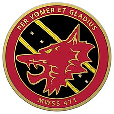

Static Site V1 (Reborn)

The Marine Corps Taught me to:
- Shoot things
- Sleep in any enviorment
- Be respectful
- Definitely not code
Literacy Narrative V2
I Still don't really know what I'm doing, but that's ok, I have access to the tools to make it happen. My ability to gather and adapt to new enviorments (CSS, HTML, WordPress, DITA, Oxygen, ect.) has greatly improved, someone else has alwasy had a worse experience and if you dig far enough you can find out what went wrong. My relationship to writing with digital tech is completely different, with the amount of things I learned in this class I now know more than I ever did before (which wasn't a whole lot lets be honest). That being said, I think the biggest asset/tool I have developed is the ability to trouble shhot and problemsolve in an enviornment that I am foreign to, you can always locate the right help for digital language, if you know where to look and who to ask. In terms of what went well for me this semester? Literally nothing, but the best way to learn is through getting smashed by your opponent (digital language) and rebuilding yourself in a way that is optimal to fight back. I had plenty of setbacks, FUBAR situations, and rage filled moments, but I learned far more than I ever could have imagined. As for what is next, well, i got an internship working for a large organization in the writing and design department, working with websites (lord help me) but I think I have added enough tools to my mental toolbelt to take on this new challenge!